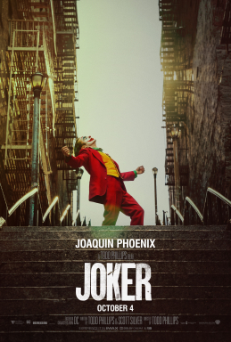

In Gotham City, mentally troubled comedian Arthur Fleck is disregarded and mistreated by society. He then embarks on a downward spiral of revolution and bloody crime. This path brings him face-to-face with his alter-ego: the Joker. Party clown and aspiring stand-up comedian Arthur Fleck lives with his mother, Penny, in Gotham City, which is rife with crime and unemployment. Arthur suffers from a neurological disorder that causes him to laugh at inappropriate times, depending on social services for medication. After being attacked by delinquents, Arthur's co-worker Randall gives him a gun for self-defense. Arthur pursues a relationship with his neighbor, single mother Sophie Dumond, and invites her to his upcoming stand-up routine at a nightclub.